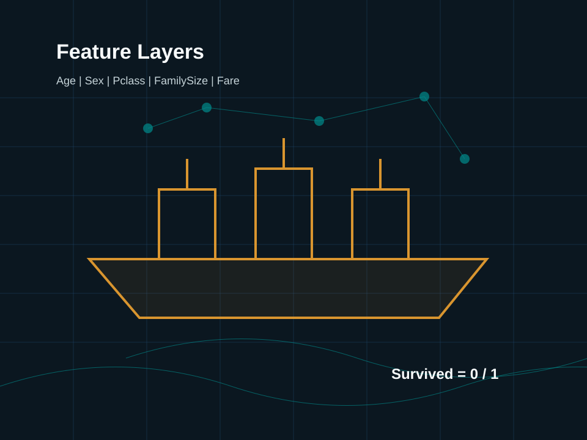
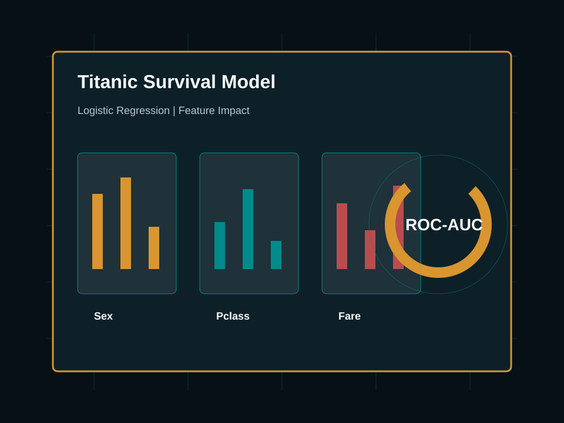

Proyecto Universitario de Machine Learning
Análisis de los Factores que Influyeron en la Supervivencia de los Pasajeros del Titanic mediante Machine Learning
Desarrollo de un modelo predictivo utilizando Regresión Logística y la metodología CRISP-ML para identificar las variables que influyeron en la supervivencia de los pasajeros del Titanic.
Introducción
El Naufragio más Famoso en Perspectiva de Datos
El hundimiento del Titanic es uno de los acontecimientos más estudiados de la historia. Gracias al análisis de datos y al aprendizaje automático, es posible identificar los factores que influyeron en la supervivencia de los pasajeros. En este proyecto se desarrolla un modelo de Machine Learning basado en Regresión Logística para analizar dichas variables y realizar predicciones sobre nuevos casos.

Objetivos
Alcance y Metas del Proyecto
Objetivo General
Desarrollar un modelo predictivo de Machine Learning que permita identificar los factores asociados con la supervivencia de los pasajeros del Titanic utilizando Regresión Logística.
Analizar la base de datos
Explorar las correlaciones, distribuciones y características de los pasajeros.
Preparar los datos
Realizar imputación de valores faltantes y transformaciones avanzadas.
Entrenar el modelo
Implementar regresión logística supervisada y una regresión lineal comparativa.
Evaluar el rendimiento
Medir métricas de clasificación en un conjunto de validación independiente.
Implementar en Streamlit
Construir una interfaz de usuario interactiva y moderna para predicciones.
Publicar en GitHub
Seguir buenas prácticas de código abierto y versionamiento.

Datos
Dataset Utilizado
La variable objetivo del modelo predictivo es Survived (1 = Sobrevivió, 0 = Falleció). A continuación se detallan las variables principales seleccionadas para el modelado:
| Variable | Descripción |
|---|---|
| Survived | Supervivencia (Objetivo) |
| Sex | Sexo del pasajero |
| Age | Edad en años |
| Fare | Tarifa pagada por el boleto |
| Pclass | Clase del pasajero (1, 2, 3) |
| Embarked | Puerto de embarque (S, C, Q) |
| SibSp | Hermanos o cónyuge a bordo |
| Parch | Padres o hijos a bordo |
Proceso
Metodología CRISP-ML
El proyecto sigue la metodología estandarizada CRISP-ML para el desarrollo de proyectos de aprendizaje automático, lo cual garantiza que el flujo de trabajo cumpla con los estándares académicos y profesionales de la industria.
1. Comprensión del problema
Definición del objetivo del proyecto, alcance y preguntas de investigación.
2. Comprensión de los datos
Análisis exploratorio para descubrir distribuciones, correlaciones y faltantes.
3. Preparación de datos
Tratamiento de nulos e imputación de variables continuas y categóricas.
4. Ingeniería de características
Creación de nuevas variables como `FamilySize` y `IsAlone`, y escalado de numéricas.
5. Entrenamiento del modelo
Entrenamiento de Regresión Logística y Regresión Lineal comparativa.
6. Evaluación
Análisis exhaustivo de métricas sobre datos no vistos.
7. Despliegue
Publicación de la aplicación Streamlit e integración en repositorio público.
Flujo CRISP-ML Simplificado
↓
Comprensión de los datos
↓
Preparación de datos
↓
Ingeniería de características
↓
Entrenamiento del modelo
↓
Evaluación de métricas
↓
Despliegue final
Visualización
Exploración de Datos (EDA)
Los gráficos a continuación sintetizan las observaciones más relevantes recolectadas a partir del Titanic dataset.
De los 891 pasajeros registrados en el dataset original, solo el 38.4% sobrevivió al naufragio, reflejando la alta tasa de mortalidad general.
Existe una disparidad enorme en la supervivencia según el sexo de los pasajeros, respaldando la histórica regla de salvamento "mujeres y niños primero".
El nivel socioeconómico representado por la clase del boleto influyó directamente: los de primera clase tuvieron una probabilidad casi tres veces mayor de salvarse frente a los de tercera clase.
- Edades: Gran concentración de pasajeros jóvenes adultos, con un pico de frecuencia entre 20 y 30 años.
- Tarifas (Fare): Distribución fuertemente sesgada a la derecha. La mayoría compró boletos económicos de bajo valor (menos de $30), mientras que un puñado de pasajes de primera clase superaron los $200.
Las tarifas bajas representan a la gran mayoría del pasaje, mientras que las edades reflejan un grupo principalmente de jóvenes trabajadores y familias.
| Survived | Pclass | Fare | Age | |
|---|---|---|---|---|
| Survived | 1.00 | -0.34 | 0.26 | -0.08 |
| Pclass | -0.34 | 1.00 | -0.55 | -0.37 |
| Fare | 0.26 | -0.55 | 1.00 | 0.10 |
| Age | -0.08 | -0.37 | 0.10 | 1.00 |
Se observa una correlación negativa moderada entre la clase (Pclass) y la supervivencia, y una correlación positiva moderada entre la tarifa (Fare) y la supervivencia.
La variable cabina presenta un porcentaje crítico de faltantes. La edad cuenta con un 19.9% de vacíos que requirieron imputación con la mediana en la preparación de datos.
Ingeniería
Ingeniería de Características
Para mejorar el desempeño y la robustez del modelo predictivo, los datos originales se sometieron a una tubería estructurada de transformaciones:
- ✔ Eliminación de valores nulos: Imputación de variables continuas (`Age`) con su mediana e imputación de variables categóricas (`Embarked`) con la moda.
- ✔ Codificación One-Hot: Transformación de categorías de texto (`Sex` y `Embarked`) en columnas binarias numéricas para la Regresión Logística.
- ✔ Normalización/Escalado: Aplicación de Standard Scaler sobre variables continuas para homogeneizar sus magnitudes en el optimizador.
- ✔ Creación de FamilySize: Construcción de una variable calculada (`SibSp + Parch + 1`) que representa el tamaño familiar a bordo.
- ✔ Creación de IsAlone: Variable booleana binaria igual a 1 si el pasajero viajaba solo, o 0 en caso contrario.
Flujo de Preparación de Datos
Este pipeline modular en scikit-learn garantiza que no haya fuga de datos (data leakage) entre los conjuntos de entrenamiento y prueba.
Algoritmos
Modelos de Machine Learning
Se entrenaron y compararon dos tipos de modelos supervisados según sus tareas respectivas:
Clasificación de Supervivencia
Objetivo: Predecir si un pasajero sobrevivió (`Survived` = 1) o no (`Survived` = 0) basándose en sus características personales y de viaje.
Es el modelo ideal al tratarse de una variable objetivo discreta binaria. Permite calcular directamente las probabilidades de supervivencia.
Predicción de Tarifa (Fare)
Objetivo: Predecir de manera continua el costo estimado del boleto en función del resto de variables.
Cumple un rol complementario y pedagógico, mostrando la diferencia en el comportamiento y evaluación de métricas para problemas de estimación continua.
Diagrama del Flujo de Entrenamiento y Validación
└──► [Evaluación/Prueba 20% (179 pas.)] ──► .predict(X_test) ──► Métricas
Evaluación
Métricas Obtenidas en la Evaluación
Métricas reales obtenidas a partir de los datos de prueba no vistos en el entrenamiento:
Clasificación: Regresión Logística
La precisión del 78.3% indica que cuando el modelo estima supervivencia, el pasajero realmente sobrevive en la gran mayoría de casos. El ROC-AUC de 85.0% demuestra una alta capacidad de discriminación.
Regresión Lineal: Predicción de Tarifa
El R² indica que el 39.6% de la varianza en los precios de los pasajes es explicada por las variables seleccionadas, principalmente Pclass y Survived.
Matriz de Confusión Explicada
Total casos de prueba evaluados: 179 pasajeros.
Curva ROC Simplificada
Representación conceptual de la tasa de verdaderos positivos (TPR) vs tasa de falsos positivos (FPR).
Explicabilidad
Factores con Mayor Influencia en la Supervivencia
El análisis de coeficientes de la Regresión Logística nos permite ordenar las variables de acuerdo a su importancia relativa y dirección del impacto:
| Variable | Influencia | Efecto sobre Supervivencia |
|---|---|---|
| Sexo (Mujer) | Muy Alta | Aumenta la probabilidad (+1.26) |
| Sexo (Hombre) | Muy Alta | Reduce la probabilidad (-1.29) |
| Clase (Pclass) | Alta | Clases inferiores reducen probabilidad (-0.89) |
| Edad (Age) | Media | Mayor edad reduce levemente probabilidad (-0.49) |
| Viaja solo (IsAlone) | Media | Reduce levemente probabilidad (-0.31) |
| Tamaño Familia | Baja | Grupos grandes reducen probabilidad (-0.22) |
Visualización de Coeficientes de Regresión Logística
Valores positivos favorecen la probabilidad de supervivencia, mientras que los valores negativos la disminuyen sustancialmente.
Despliegue
Aplicación Interactiva Streamlit
Para hacer este modelo utilizable por no-expertos, implementamos una interfaz interactiva de predicción rápida. El usuario puede modificar los campos del formulario y ver la probabilidad de supervivencia estimarse en tiempo real.
El código fuente se encuentra encapsulado en [streamlit_app.py](file:///c:/Users/morel%20technology/Documents/Codex/2026-07-08/files-mentioned-by-the-user-titanic/outputs/titanic-ml-project/app/streamlit_app.py) y carga el pipeline completo almacenado con joblib.
Abrir App StreamlitStack Tecnológico
Herramientas Empleadas
Herramientas y tecnologías integradas para el ciclo completo del desarrollo del proyecto:
Hallazgos
Conclusiones Clave
- ✦ El sexo fue la variable de mayor peso absoluto en el modelo. Las mujeres tenían una probabilidad considerablemente más alta de sobrevivir.
- ✦ La clase social (Pclass) tuvo un efecto inversamente proporcional: pertenecer a tercera clase penalizó gravemente la probabilidad de salvarse.
- ✦ Seguir la metodología CRISP-ML aseguró una estructuración ordenada y auditable del ciclo de vida del desarrollo.
- ✦ El modelo de Regresión Logística superó el 80% de exactitud (accuracy), ofreciendo un balance robusto para clasificación binaria simple.
Futuro
Recomendaciones
- ✦ Probar modelos más complejos: Evaluar árboles de decisión, Random Forest o XGBoost para capturar relaciones no lineales en las variables.
- ✦ Derivar nuevas variables: Incorporar el estado civil o extraer los títulos honoríficos (Mr., Mrs., Miss, Master) del nombre.
- ✦ Afinar hiperparámetros: Aplicar GridSearch cross-validation para optimizar la regularización del modelo logístico.
- ✦ Despliegue en la nube: Publicar el prototipo directamente en Streamlit Community Cloud para acceso remoto permanente.
Información del Proyecto
Equipo y Detalles de la Entrega
Este proyecto de análisis e implementación predictiva del Titanic se ha desarrollado en el marco académico universitario:
| Estudiante / Autora | Liskeidy Rosario P. |
| Asignatura | Introducción a la Inteligencia Artificial / Machine Learning |
| Docente | Prof. de la Asignatura / Por definir |
| Universidad | Institución Universitaria |
| Período Académico | 2026-II |
| Fecha de Entrega | Julio 2026 |